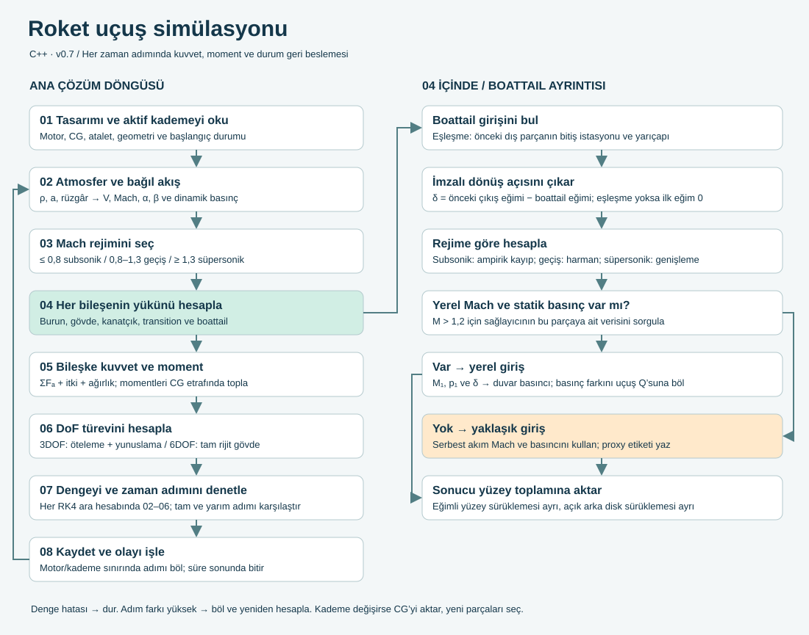

Roket uçuş simülasyonu
Serbest uçuş C++ uygulaması · Yeşil bağlantılar döngüleri ve dal geçişlerini, sarı kutular sınır durumlarını gösterir. Geometri yolu ana simülasyonun servislerinden beslenir; tablo yolu arşiv karşılaştırması içindir. CG kütle merkezi, Q dinamik basınç, q yunuslama hızıdır.
